Explainer gallery
Twelve diagram types a product or UX article needs, drawn by tools/illustration.py on the eight pastel tints from the Printables site, with its dark dot grid and dark ink. In an article every explainer shares the article's tint (by publish order, like the Printables tiles); here the types run across all eight, so some tints repeat. Each image is one PNG, shown on the white page and on the near-black page. The swatches show each tint with its two highlight colours (A and B) and the label contrast. Rules: illustration-rules.md; source: printables-tints.md.
The eight tints
- A #75A7F0B #174FA1
blue #DBE8FB
ink #1D1B16 13.9:1, muted #5F5B52 5.5:1
rotates - A #97DD88B #388627
green #DCEFD8
ink #1D1B16 14.2:1, muted #5F5B52 5.6:1
rotates - A #EE7792B #A11736
pink #FBE0E6
ink #1D1B16 13.9:1, muted #5F5B52 5.4:1
rotates - A #A585E0B #4B2692
purple #E8E0F7
ink #1D1B16 13.5:1, muted #5F5B52 5.3:1
rotates - A #FFE066B #A18517
yellow #FFF3C4
ink #1D1B16 15.5:1, muted #5F5B52 6.1:1
rotates - A #88DDD6B #257E77
teal #D7F0EE
ink #1D1B16 14.4:1, muted #5F5B52 5.7:1
rotates - A #F9A86CB #A15117
peach #FDE3D0
ink #1D1B16 14.0:1, muted #5F5B52 5.5:1
reserved - A #88ACDDB #29558E
slate #E0E6EE
ink #1D1B16 13.7:1, muted #5F5B52 5.4:1
reserved
-
Timeline
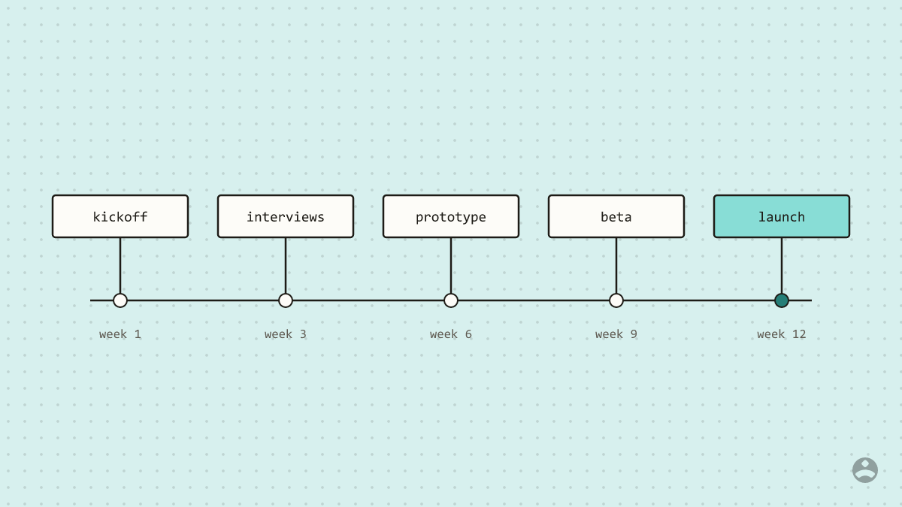
Tint teal #D7F0EE, ink #1D1B16 (14.4:1), muted #5F5B52 (5.7:1). Left on the white page, right on the near-black page; the same file.
-
Flow with arrows
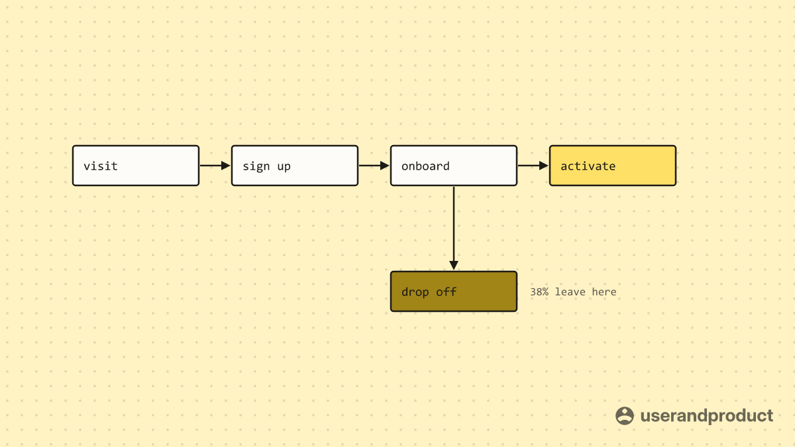
Tint yellow #FFF3C4, ink #1D1B16 (15.5:1), muted #5F5B52 (6.1:1). Left on the white page, right on the near-black page; the same file.
-
Before and after
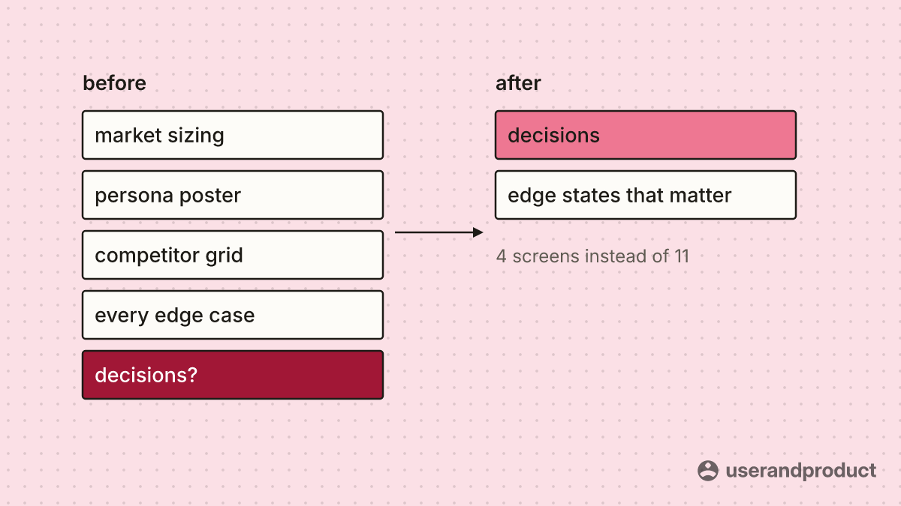
Tint pink #FBE0E6, ink #1D1B16 (13.9:1), muted #5F5B52 (5.4:1). Left on the white page, right on the near-black page; the same file.
-
2 x 2 matrix
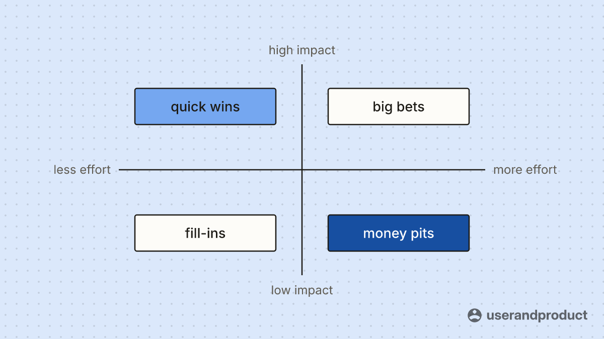
Tint blue #DBE8FB, ink #1D1B16 (13.9:1), muted #5F5B52 (5.5:1). Left on the white page, right on the near-black page; the same file.
-
Numbered steps
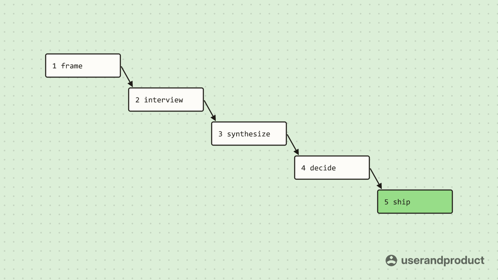
Tint green #DCEFD8, ink #1D1B16 (14.2:1), muted #5F5B52 (5.6:1). Left on the white page, right on the near-black page; the same file.
-
Funnel
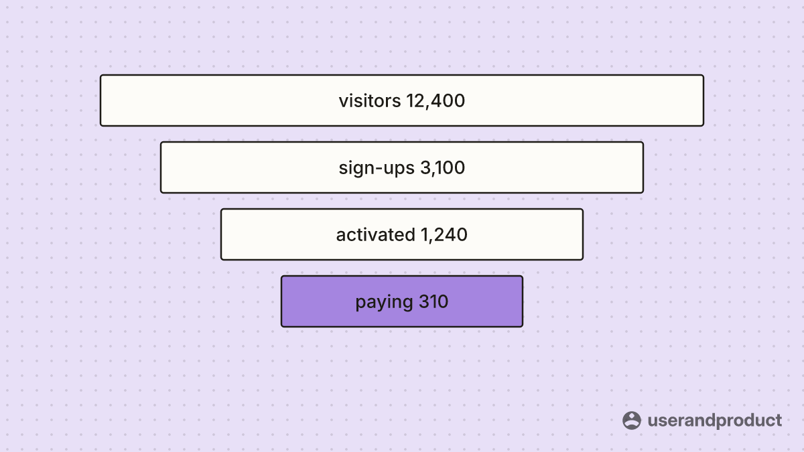
Tint purple #E8E0F7, ink #1D1B16 (13.5:1), muted #5F5B52 (5.3:1). Left on the white page, right on the near-black page; the same file.
-
Bar comparison
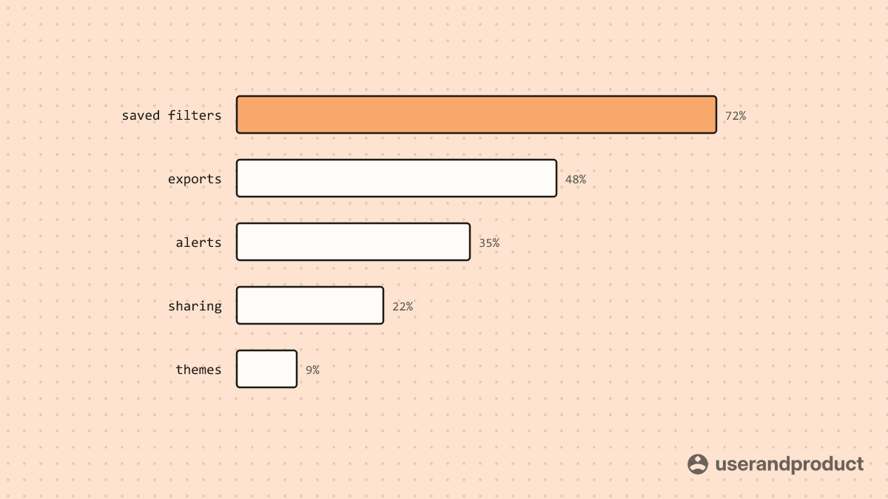
Tint peach #FDE3D0, ink #1D1B16 (14.0:1), muted #5F5B52 (5.5:1). Left on the white page, right on the near-black page; the same file.
-
Line chart with a target
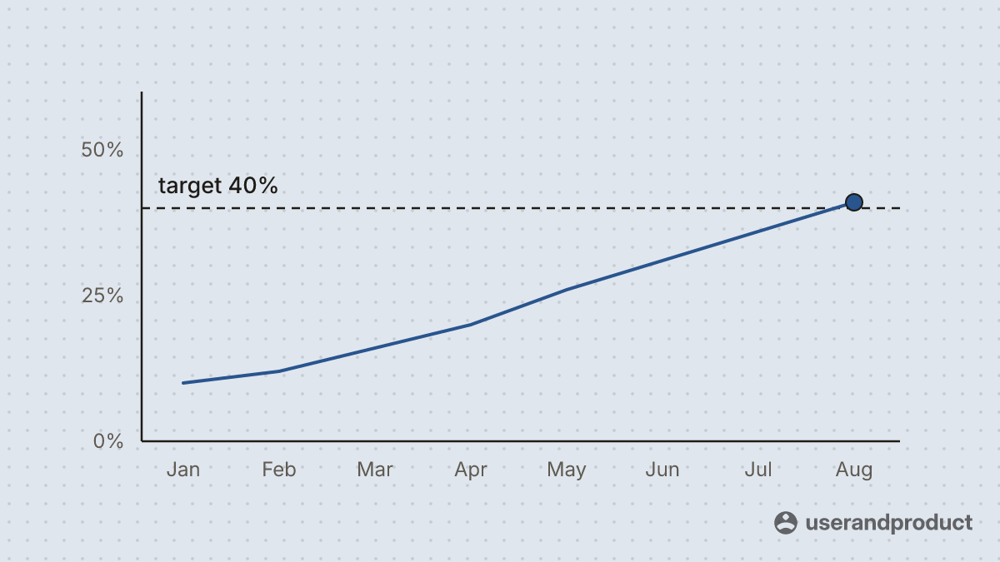
Tint slate #E0E6EE, ink #1D1B16 (13.7:1), muted #5F5B52 (5.4:1). Left on the white page, right on the near-black page; the same file.
-
Stack of layers
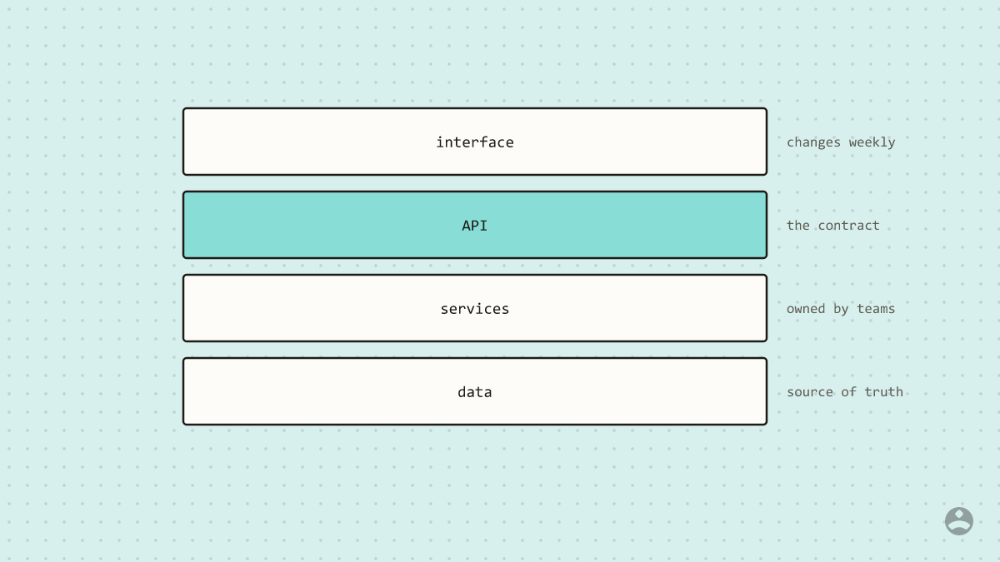
Tint teal #D7F0EE, ink #1D1B16 (14.4:1), muted #5F5B52 (5.7:1). Left on the white page, right on the near-black page; the same file.
-
Checklist
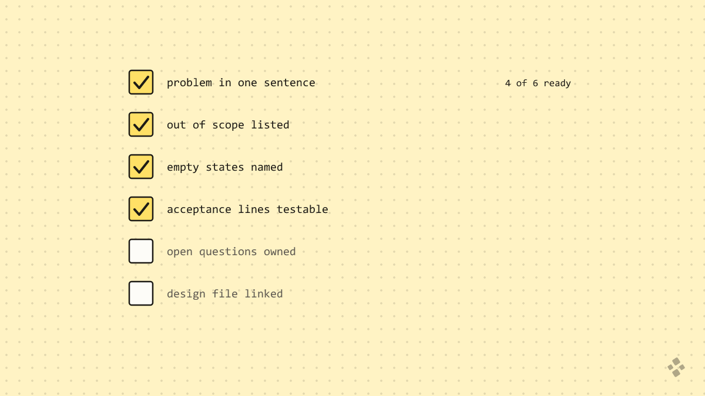
Tint yellow #FFF3C4, ink #1D1B16 (15.5:1), muted #5F5B52 (6.1:1). Left on the white page, right on the near-black page; the same file.
-
Cycle
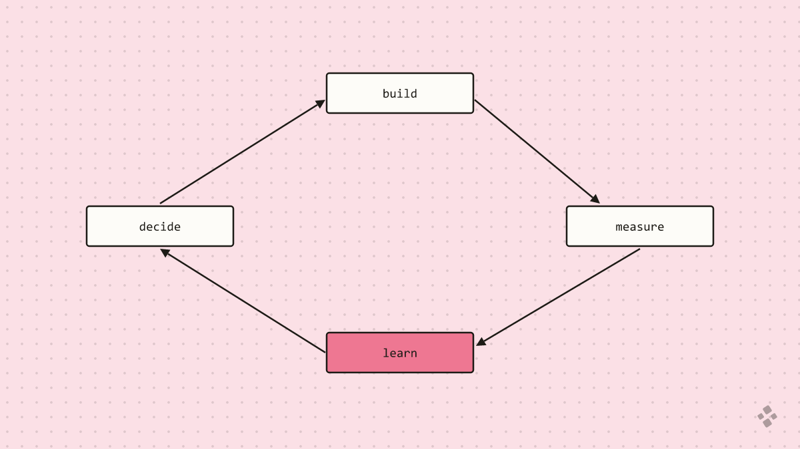
Tint pink #FBE0E6, ink #1D1B16 (13.9:1), muted #5F5B52 (5.4:1). Left on the white page, right on the near-black page; the same file.
-
Table grid
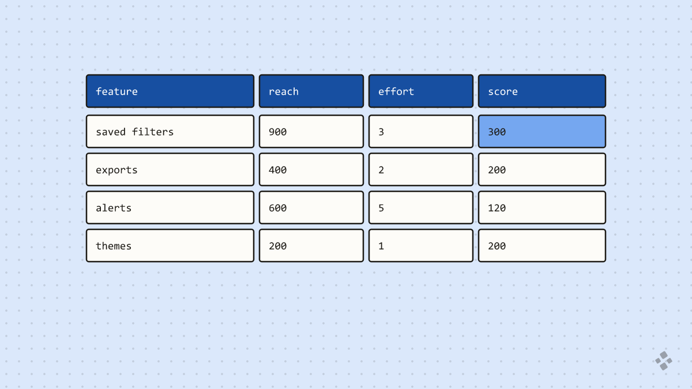
Tint blue #DBE8FB, ink #1D1B16 (13.9:1), muted #5F5B52 (5.5:1). Left on the white page, right on the near-black page; the same file.